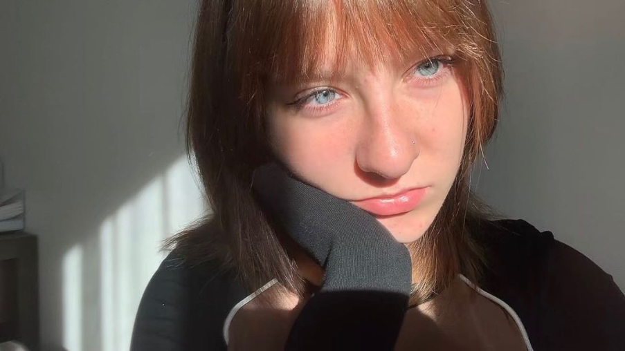

Sveiki! Mani sauc Līva Terēze Tiliba, es esmu dizainere un es mācos radošo industriju virzienā.
Tērps ir izveidots divtūkstošo stilā. Es izvēlējos platas džinsu bikses, jo tās bija populāras tajā laika posmā. Krekla vietā ir svārki. Svārki kopā ar biksēm parāda vienlīdzību, jo drēbēm nav dzimuma un tās var vilkt jebkurš. Ap kaklu ir šallīte kura ir sarkanā krāsā, simbolizējot Latvijas karogu. Jostai, ir latvju raksti, lai izjustu patriotisma noskaņu. Kājās ir augstpapēžu kurpes, kas parāda latviešu eleganto pusi.

MISIJA - mana zīmola misija ir izcelt latvju zīmes skaistumu, tajā pašā brīdī atgādinot par 2000s stilu, kas izceļās ar ļoti radošiem “trendiem”.
PATRIOTISMS - izjust mīlestību un uzticību savai valstij, kā arī pieņemt savu latvisko identitāti.
ELEGANCE - jebkurā apģērbā cilvēks var izskatīties eleganti.
RADOŠUMS - manuprāt, divtūkstošajos gados bija radoši “trendi” un es vēlos cilvēkiem atgādināt par tiem.
@lttiliba